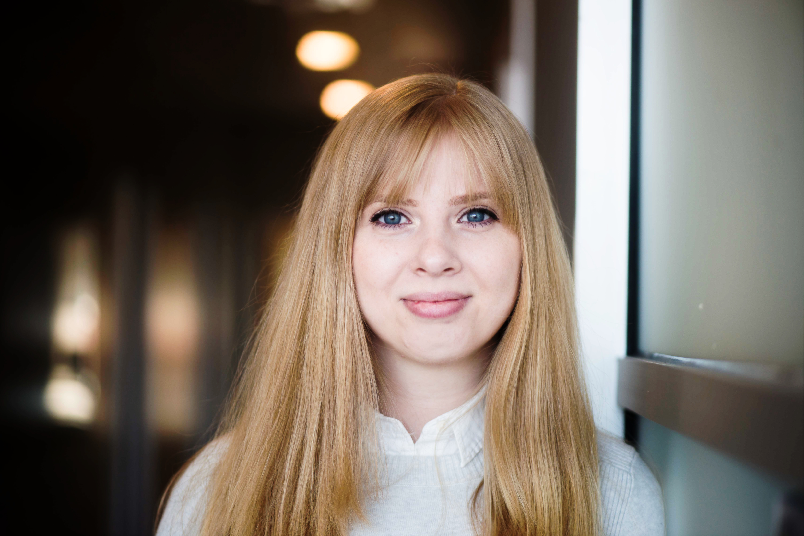

Alesia Chernikova
PhD Student
Northeastern University
Khoury College of Computer and Information Science
Email : chernikova.a@husky.neu.edu
I am a second year Computer Science PhD student working on adversarial machine learning
in cyber security and self-driving car applications. I am part of the Cybersecurity and Privacy Institute at Northeastern and
advised by
Prof. Alina Oprea.
I am also a member of the Network and Distributed Systems Security Lab (
NDS2).